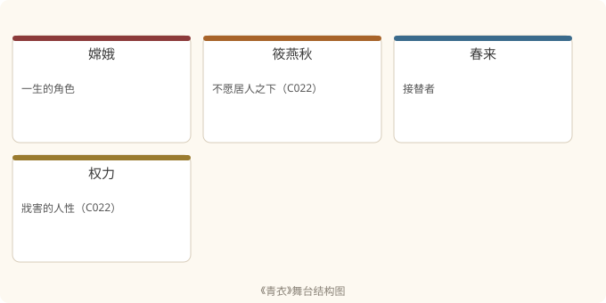

青衣
一、基本信息
| 作者 | 毕飞宇 |
|---|---|
| 成书/出版 | 发表年份待核（中国作家网 C022：'中篇小说《青衣》'——2000年说通说待核） 汪政：毕飞宇的目光（中国作家网）（官方文学机构） |
| 国别/地区 | 中国 |
| 时代 | 现当代 · 当代 |
| 体裁 | 中篇小说 |
| 语言 | 汉语（白话） |

《青衣》舞台结构图（主题·结构图）
二、创作背景
中国作家网（C022）：'另有玉米系列及中篇《青衣》《玉秀》《玉秧》'——本作为毕飞宇中篇代表作。
评述（C022）：筱燕秋'不愿居人之下'，作为'权力对人性的戕害'之一例（C022）。
三、内容脉络
筱燕秋四十年后重登舞台：从'嫦娥'到'嫦娥'（通说待核）。
身体与角色的相互吞噬（通说待核）。
四、主要人物表
| 人物 | 身份 | 说明 |
|---|---|---|
| 筱燕秋 | 京剧演员 | 青衣（C022） |
| 春来 | 徒弟 | 接替者（通说待核） |
五、主题与艺术特点
- 权力对人性的戕害（C022）。
- '人走茶凉'的舞台政治（通说待核）。
- 女性与角色合一的悲剧（通说）。
六、影响与评论
- 中国作家网：'筱燕秋不愿居人之下'——权力戕害的例证（C022）。
汪政：毕飞宇的目光（中国作家网）（官方文学机构） - 2002年电视剧改编（通说待核）。
汪政：毕飞宇的目光（中国作家网）（官方文学机构）
七、阅读建议
难点
- 京剧行当（青衣）知识。
- 心理描写的冷峻。
- 《青衣》（江苏文艺出版社，通说待核）。
先《青衣》后《玉米》。
八、待核实
- 首刊（《收获》2000年说）核对。
- 筱燕秋/春来人名核对。
- 电视剧改编（2002年说）待核。
本页主要来源
毕飞宇的其他收录作品：推拿